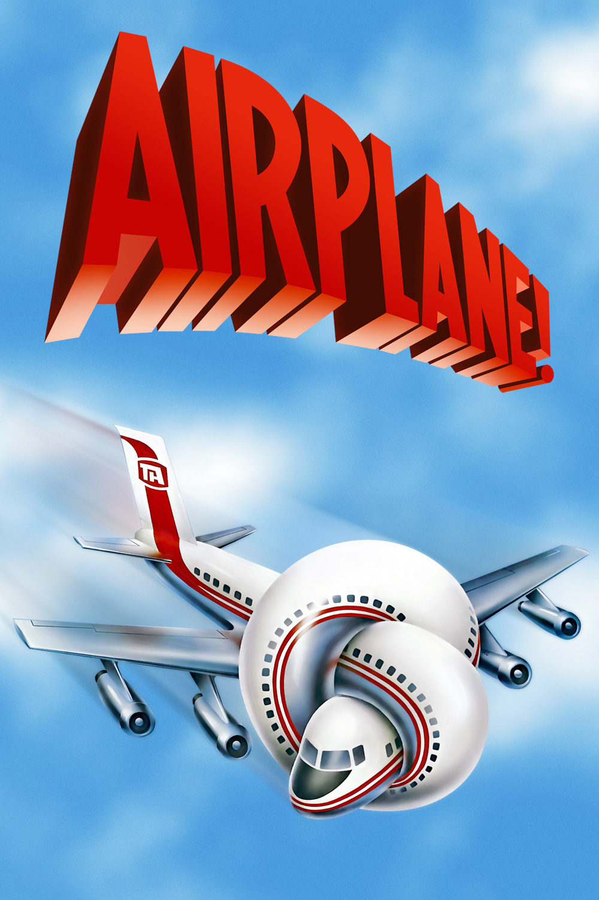

Airplane! (alternatively,
titled
Flying High!) is a 1980 American satirical disaster film written and
directed by David and Jerry Zucker and Jim Abrahams, and produced by Jon
Davison. It stars Robert Hays and Julie Hagerty and features Leslie Nielsen,
Robert Stack, Lloyd Bridges, Peter Graves, Kareem Abdul-Jabbar, and Lorna
Patterson. The film is a parody of the disaster film genre, particularly the
1957 Paramount film
Zero Hour!
from which it borrows the plot and the central characters, as well as many
elements from
Airport 1975. The
film is known for its use of surreal humor and its fast-paced slapstick comedy,
including visual and verbal puns, gags and obscure humor like propeller sound
effects for a jet plane.
Airplane! was a critical
and financial success, grossing over $83 million in North America against a
budget of $3.5 million, being released by Paramount Pictures. The film's
creators received the Writers Guild of America Award for Best Adapted Comedy,
and nominations for the Golden Globe Award for Best Motion Picture – Musical or
Comedy and for the BAFTA Award for Best Screenplay.
In the years
since its release, the film's reputation has grown substantially. The film was
ranked sixth on
Bravo's
100 Funniest Movies.
In a 2007 survey by Channel 4 in the United Kingdom, it was judged the second
greatest comedy film of all time, after
Monty Python's Life of Brian.
In 2008,
Airplane! was selected by Empire magazine as one of The 500 Greatest Movies of
All Time and in 2012 was voted number one in the 50 Funniest Comedies Ever poll.
In 2010, the film was selected for preservation in the United States
National Film Registry by the
Library of Congress as being "culturally, historically, or
aesthetically significant".